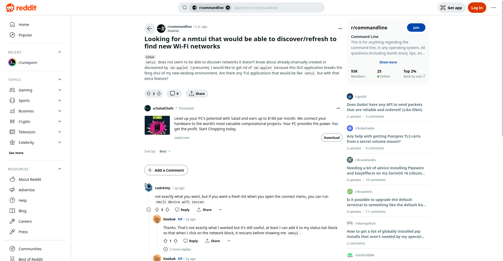

+------------------------------------------------------------------------------+ | | | /home/sukalaper blog/ paper/ about/ | | | +------------------------------------------------------------------------------+ Cara Mengakses Reddit Pada Arch Linux ________________________________________________________________________________ Saat saya sedang mencari referensi untuk penggunaan salah satu alat pengelola jaringan pada GNU/Linux, saya mendapat sebuah jawaban pada salah satu situs tersebut dan diarahkan ke Reddit namun inilah hasilnya :Melansir dari situs ini [1] untuk dapat menjelajahi Reddit di GNU/Linux cukup tambahkan file ini pada /etc/hosts : $ sudo vim /etc/hosts Kemudian tambahkan baris ini pada akhir file : # Unblock Reddit. 151.101.129.140 i.redditmedia.com 52.34.230.181 www.reddithelp.com 151.101.65.140 g.redditmedia.com 151.101.65.140 a.thumbs.redditmedia.com 151.101.1.140 new.reddit.com 151.101.129.140 reddit.com 151.101.129.140 gateway.reddit.com 151.101.129.140 oauth.reddit.com 151.101.129.140 sendbird.reddit.com 151.101.129.140 v.redd.it 151.101.1.140 b.thumbs.redditmedia.com 151.101.1.140 events.reddit.com 54.210.123.98 stats.redditmedia.com 151.101.65.140 www.redditstatic.com 151.101.193.140 www.reddit.com 52.3.23.26 pixel.redditmedia.com 151.101.65.140 www.redditmedia.com 151.101.193.140 about.reddit.com 52.203.76.9 out.reddit.com Kemudian simpan, lalu muat ulang peramban dan hasilnya akan seperti ini :

Berhasil! Namun, bagaimana hal diatas bekerja? Mungkin dapat dikatakan ini adalah sebuah skenario "pemalsuan" resolusi DNS secara lokal. Dengan kata lain, isi file yang baru kita tambahkan tadi akan memberi instruksi pada sistem untuk mengarahkan permintaan yang kita lakukan untuk mengarahkan alamat IP yang telah ditentukan. Jadi, kita dapat kita tetap dapat mengakses Reddit bahkan jika situs tersebut diblokir oleh penyedia layanan internet (ISP) atau pemerintahan. Ini bekerja karena sistem tidak lagi bergantung pada resolusi DNS eksternal untuk mengetahui alamat IP dari Reddit. [1] https://medium.com/jasonganub/how-to-access-reddit-in-indonesia-d185bb532380 ________________________________________________________________________________ Sukalaper © 2024, All rights reserved.